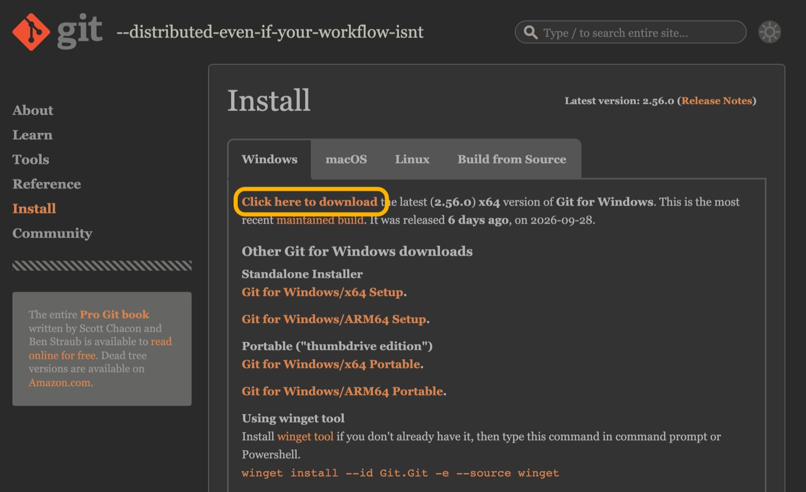
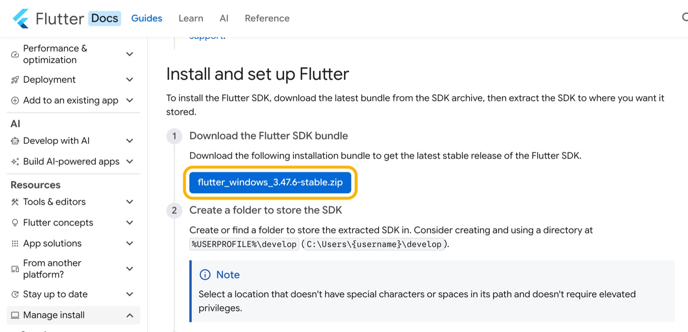
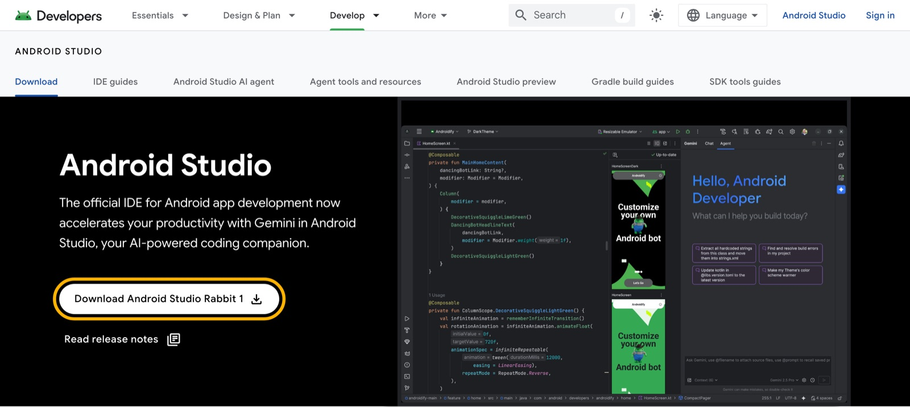
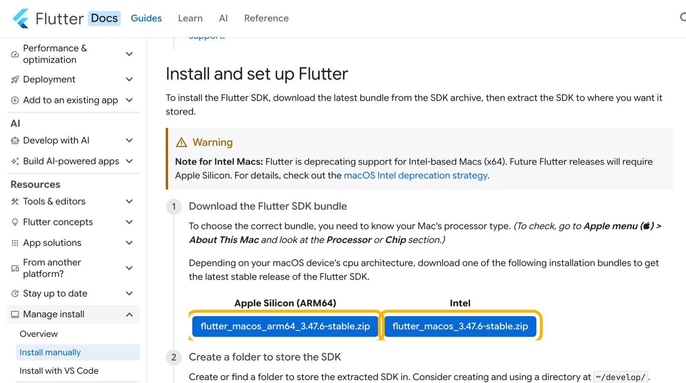

Git
Downloads Flutter for you and keeps track of your code's history.
git-scm.comLecture 02 · Mobile App Development
From an empty laptop to a running app, step by step.
→ next · F fullscreen · N notes · T theme
$ flutter doctor[✓] Flutter (Channel stable, 3.47.6)[✓] Android toolchain[✓] Connected device (2 available)• No issues found!$ flutter create my_first_appAll done!
Today
Last lecture: what Flutter is. Today: make it run on your laptop.
What we install and why
Step by step, with pictures
3 simple steps
A prompt that installs it for you
Create it, run it, hot reload
flutter doctor shows green ticks, and your first Flutter app runs on your laptop.Step 0 · The toolkit
Four tools. Each one has one job.
Downloads Flutter for you and keeps track of your code's history.
git-scm.comWhere you write code. The extension adds Flutter commands and buttons.
code.visualstudio.comFlutter itself: the flutter command, Dart and all the widgets.
Brings the Android SDK and the emulator: a virtual phone on your laptop.
developer.android.com/studioWindows · Step 1
Two normal installers. Click Next until they finish.

The Dart extension installs automatically with it.
Windows · Step 2
The whole SDK is one zip file from the official Flutter website.

Real screenshot · docs.flutter.dev
Windows · Step 3
C:\developA short, simple folder with no spaces and no Arabic letters.
1 Right-click the zip → Extract All…
2 Replace the folder with C:\develop 3 Click Extract
Windows · Step 4
bin folderbin holds the flutter command. Windows needs to know where it is.
Inside bin you'll see flutter.bat. That's how you know you're in the right folder.
C:\develop\flutter\bin
Windows · Step 5
Path is Windows' list of folders where it looks for commands. We'll add ours to it.
1 Press the ⊞ Win key, type environment
2 Click …for your account
3 In the top list, click Path 4 Click Edit…
Windows · Step 6
Add one new line to the list. That's it!
PS> flutter --version Flutter 3.47.6 • channel stable
The first run is slow because Flutter downloads Dart. That's normal.
Windows · Step 7
It brings the Android tools and the emulator (a virtual phone).

PS> flutter doctor --android-licenses All SDK package licenses accepted.
Windows · Step 8
Pick one. You can always add the other later.
flutter devices lists your phoneCheckpoint
flutter doctorYour setup's health check. Run it again after every fix.
PS> flutter doctorDoctor summary (to see all details, run flutter doctor -v):[✓] Flutter (Channel stable, 3.47.6, on Microsoft Windows 11)[✓] Windows Version (11 Home 64-bit)[✓] Android toolchain - develop for Android devices[✓] Chrome - develop for the web[✗] Visual Studio - develop Windows apps ✗ Visual Studio not installed; this is necessary to develop Windows apps.[✓] Android Studio[✓] VS Code[✓] Connected device (3 available)[✓] Network resources ! Doctor found issues in 1 category.
macOS

Real screenshot · docs.flutter.dev
$ echo 'export PATH="$HOME/develop/flutter/bin:$PATH"' >> ~/.zprofile
Then open a new Terminal and run flutter doctor. Android Studio: same steps as Windows.
Shortcut
Agents like Claude Code, Codex, Gemini CLI or Cursor can run the setup for you. Paste this prompt:
You are a patient setup assistant helping a complete beginner. Goal: install Flutter for Android development on this computer. 1. Detect my OS (Windows or macOS) and CPU (x64 or ARM). Check what's already installed (git, flutter, VS Code, Android Studio) and keep what works. 2. Use official sources only: git-scm.com, docs.flutter.dev, developer.android.com, code.visualstudio.com. 3. Download the latest STABLE Flutter SDK zip from docs.flutter.dev/install/manual, extract it to C:\develop\flutter (Windows) or ~/develop/flutter (macOS), and add its bin folder to my PATH. 4. Guide me through Android Studio's SDK Manager (SDK Platform, Build-Tools, Command-line Tools, Platform-Tools, Emulator), then run: flutter doctor --android-licenses 5. Run flutter doctor -v, fix everything that blocks Android development, and run it again. Skip Visual Studio (Windows desktop apps only). 6. Prove it works: run flutter create hello_flutter, then run the app on an emulator, my phone, or Chrome. Rules: Ask me before any admin/sudo command or system change. Explain every step in simple words. When you finish, summarize what you installed, where, and what I still need to do by hand.
Troubleshooting
| 'flutter' is not recognized… | The Path line is wrong. It must be exactly C:\develop\flutter\bin. Then open a new PowerShell. |
| cmdline-tools component is missing | Android Studio → SDK Manager → SDK Tools → tick Android SDK Command-line Tools → Apply. |
| Android license status unknown | Run flutter doctor --android-licenses and press y for each license. |
| Emulator is very slow or won't start | Turn on virtualization in your BIOS, close heavy apps, or use your own phone. |
| Strange errors, and the folder path has spaces or Arabic letters | Move Flutter to C:\develop\flutter and fix the Path line to match. |
Phone doesn't show up in flutter devices |
Use a data cable (not charge-only), tap Allow USB debugging on the phone, and try again. |
Your first project
Two ways, same result. Pick the one you like.
PS> flutter create my_first_app Creating project my_first_app... … All done! PS> cd my_first_app PS> flutter run
create makes the project · cd moves into it · run starts it
Your first project
Lots of folders, but you only need one for now.
Where your app starts. You'll spend almost all your time inside lib/.
Your app's ID card: its name, version and the packages it uses.
Platform files Flutter manages for you. Leave them alone for now.
Your first project
'Flutter Demo Home Page' to your own titleWrap-up
flutter doctor shows ✓ for Flutter and Android toolchainDart basics: the language behind Flutter